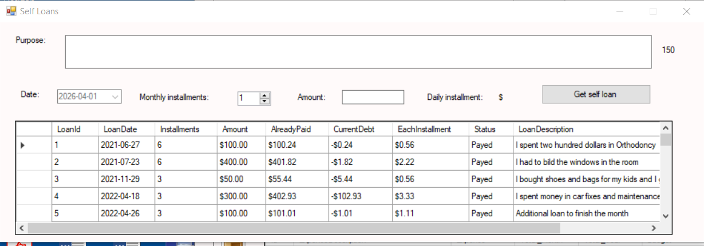
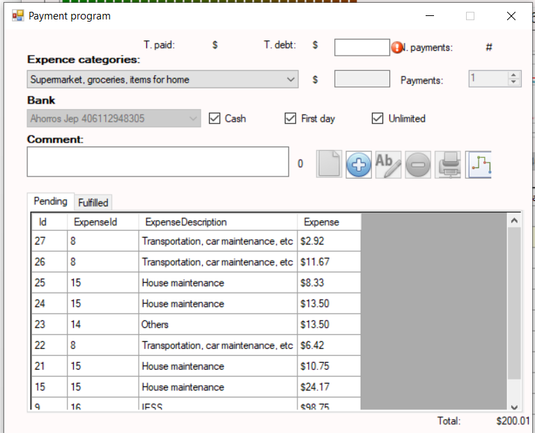
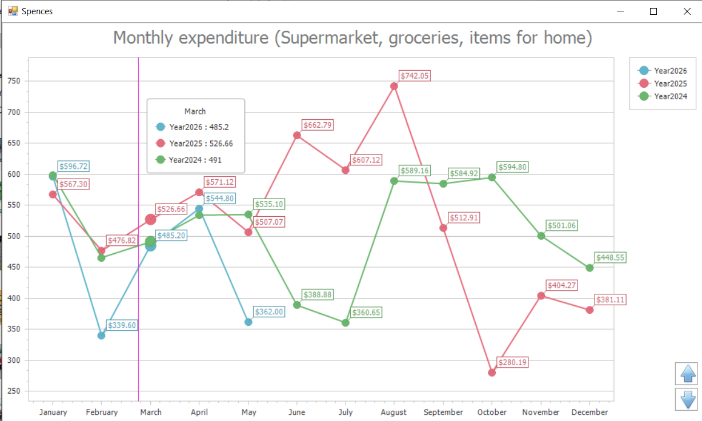
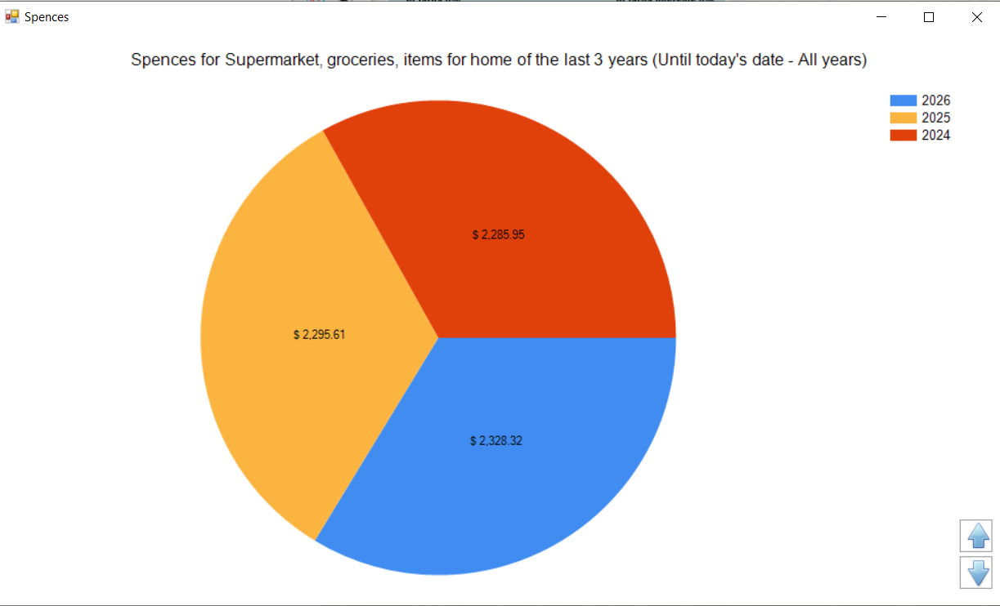
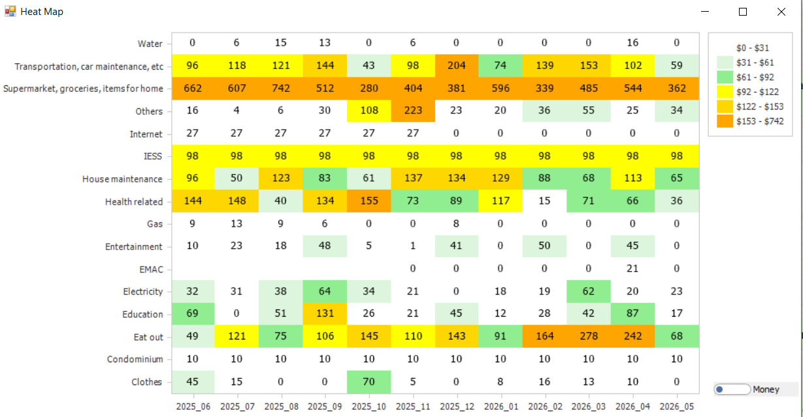

Interface Principal de Gerenciamento de Despesas
Painel principal do módulo de gerenciamento de despesas pessoais com acesso às ferramentas financeiras, categorias de despesas e controles de orçamento.

Registro de Empréstimos Pessoais
Janela utilizada para registrar empréstimos pessoais quando as despesas mensais excedem a renda disponível.

Análise de Tendências de Despesas por Categoria
Gráfico de linhas mostrando as despesas mensais da categoria selecionada nos últimos 12 meses, incluindo as despesas parciais do mês atual.

Análise de Tendências de Despesas Totais
Gráfico de linhas exibindo as despesas mensais totais de todas as categorias durante os últimos 12 meses.

Análise de Economia e Gastos Excessivos
Gráfico de áreas visualizando as economias mensais e situações de gastos excessivos ao longo do tempo.

Gerenciamento de Despesas Recorrentes
Interface para registrar despesas recorrentes e dividir grandes pagamentos anuais em parcelas mensais mais administráveis.

Projeção de Obrigações Futuras
Gráfico de linhas exibindo obrigações pendentes e pagamentos programados nos meses futuros.

Configuração de Alertas de Despesas
Painel de configuração para criar alertas de lembrete associados a despesas e datas de vencimento específicas.

Painel de Análise de Despesas
Interface centralizada utilizada para gerar gráficos e analisar dinamicamente os hábitos de gastos pessoais.

Comparação Mensal de Despesas
Gráfico de linhas comparando despesas por mês entre os anos selecionados para gastos totais ou categorias específicas.

Gráfico de Pizza de Distribuição de Despesas
Visualização em gráfico de pizza da distribuição de despesas para os anos e categorias selecionados.

Mapa de Calor de Despesas
Visualização em heat map mostrando a intensidade das despesas em todas as categorias durante os últimos 12 meses.

Relatórios Dinâmicos de Despesas
Módulo avançado de relatórios que permite agrupar dinamicamente os dados por categoria, ano, mês e dia.

Configuração de Parâmetros do Sistema
Painel de personalização para ajustar os parâmetros do software e as preferências de gerenciamento financeiro pessoal.

Interface de Suporte Técnico
Janela de suporte fornecendo assistência técnica e recursos de ajuda direta aos usuários.